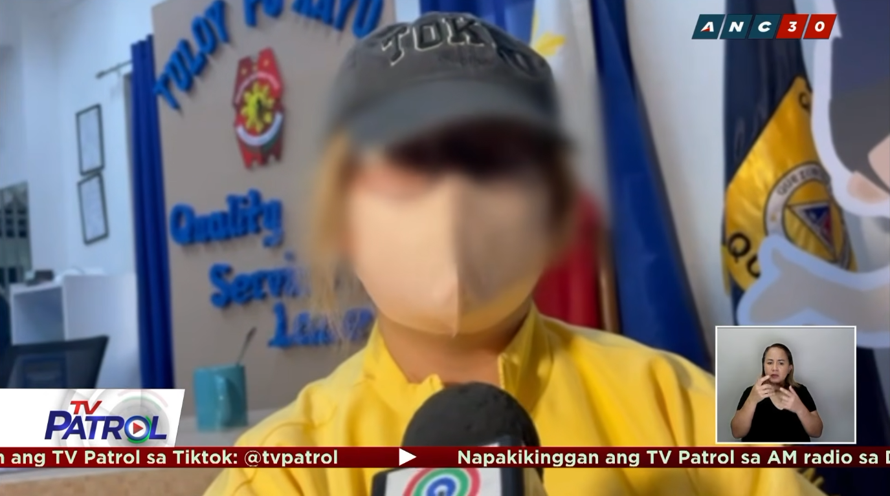

Balita · Quezon City
Lalaki, nag-disguise umano bago bugbugin ang dating ka-live-in sa QC

Isang lalaki ang umano’y dinaganan, kinaladkad, binugbog, at pinukpok gamit ang speaker ang kaniyang dating ka-live-in partner sa loob ng isang boutique sa Barangay Bahay Toro, Quezon City, noong Martes ng tanghali.
Makikita sa CCTV footage na biglang sinugod ng lalaki ang biktima at paulit-ulit itong sinaktan.
Ayon sa biktima, tila pinagplanuhan umano ng lalaki ang pag-atake dahil nag-disguise ito bago siya salakayin.
“Noong una po, nakamaskara pa po siya. Kaya iba po yung makikita ninyo na itsura sa CCTV. Iba po yung buhok niya, iba po yung kulay ng mukha. Pero nung bandang gitna na po nung binubugbog niya po ako, tinanggal niya po yung mask,” kuwento ng biktima.
Sinabi ng biktima na wala siyang maisip na dahilan kung bakit siya sinugod at sinaktan ng dating ka-live-in partner dahil maayos naman umano ang naging paghihiwalay nila.
Gayunman, inamin ng biktima na hindi ito ang unang pagkakataon na nakaranas siya ng pananakit mula sa lalaki sa loob ng siyam na taon nilang pagsasama.
“Wala po talaga akong maisip na dahilan. Ang naisip ko lang ngayon po siguro is nade-depress siya o wala siyang makausap. Hindi ko po talaga alam bakit. Kakauwi ko lang po noon ng Japan. Tapos, mukhang pinlano po talaga niya kasi nga naka-disguise,” dagdag ng biktima.
Bukod sa pananakit, sinabi ng biktima na nakararamdam siya ngayon ng matinding takot at pangamba dahil alam umano ng suspek ang kaniyang mga galaw at mga maaring tuluyan.
“Ang sakit po ng katawan ko ngayon at saka ng ulo ko kasi ang dami kong bukol. Pero mas nakakaramdam po ako ng takot kasi every time na lalabas ako, baka bigla na lang niya ako saksakin,” dagdag pa niya.
Naisampa na ng biktima ang reklamo laban sa suspek.
Ayon kay Police Major Jennifer Gannaban, tagapagsalita ng Quezon City Police District (QCPD), nagpapatuloy ang imbestigasyon sa insidente at inihahanda na rin ang hiwalay na reklamo para sa violence against women (VAW).